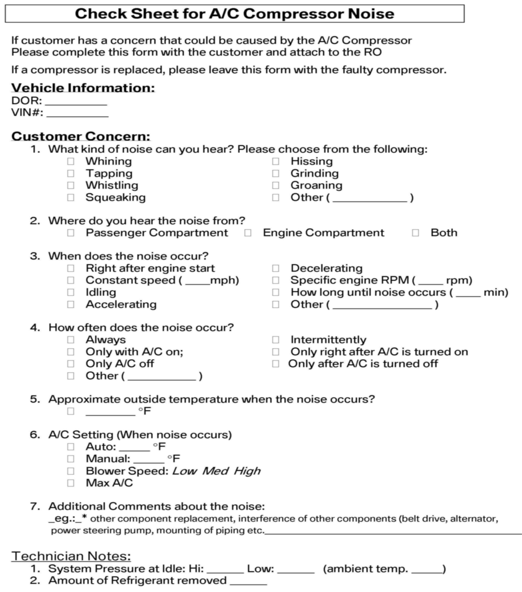
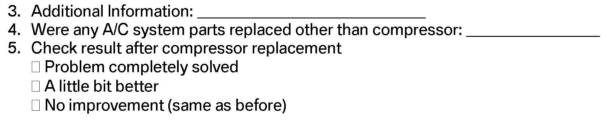
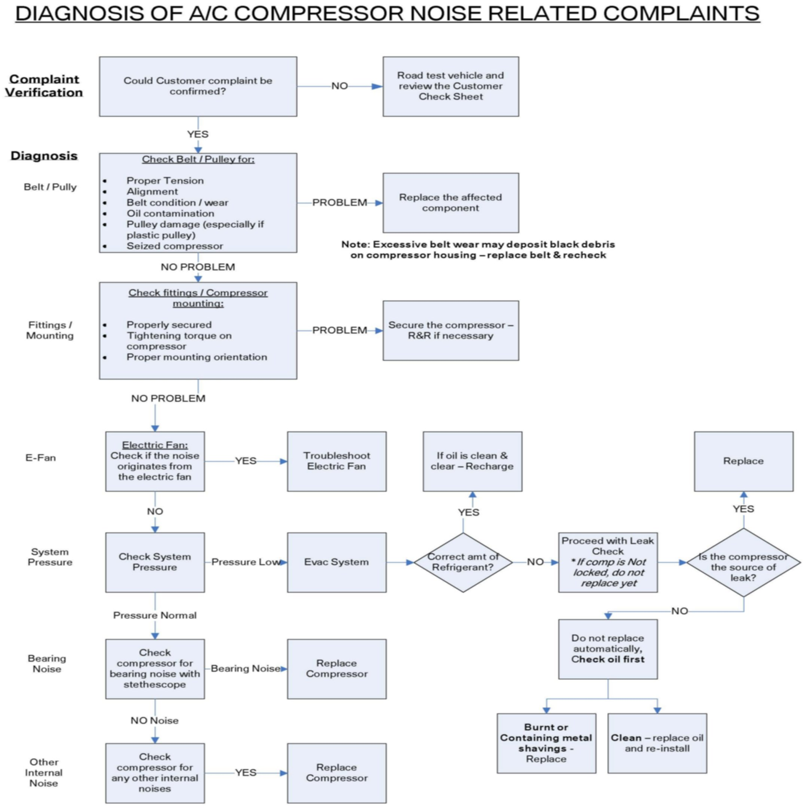

A/C - Compressor Noise Troubleshooting
SI B 64 21 05Heating and Air Conditioning
May 2010
Technical Service
This Service Information bulletin supersedes SI B64 21 05 dated May 2008.
[NEW] designates changes to this revision
SUBJECT
Troubleshooting Air Conditioning Compressor Noise
MODEL
All
SITUATION
A high percentage of air conditioning compressors which are returned under warranty for complaints of noisy operation have been found to be non-defective.
PROCEDURE
[NEW] This procedure only applies to compressor noise diagnosis that does not require a DIAGCODE as per SI B01 01 10. For these vehicles, complete the mechanical diagnosis test plan in ISTA (Integrated Service Technical Application). This test plan can be found by performing a text search using the search term "M6450", or by selecting the following path: "Function structure / Body / Heating and Air Conditioning systems" and "Start search".
In order to assist with the diagnosis of noisy compressors, a "Check Sheet" has been developed to assist the workshop with gathering information from the customer to ensure proper diagnosis the first time. Please return this "Check Sheet" with any replaced compressor.
Check to see whether a relevant fault symptom is available, using fault symptom diagnosis. Refer to SI B64 04 07 for more information on how to access fault symptom troubleshooting.
If no fault symptom is available, please use the attached "Compressor Noise Diagnosis" chart when diagnosing any air conditioning compressor noises.
WARRANTY INFORMATION
For information only
ATTACHMENTS


view PDF attachment B642105Customer_Checksheet.

view PDF attachment B642105Diagnosis_Flowchart.